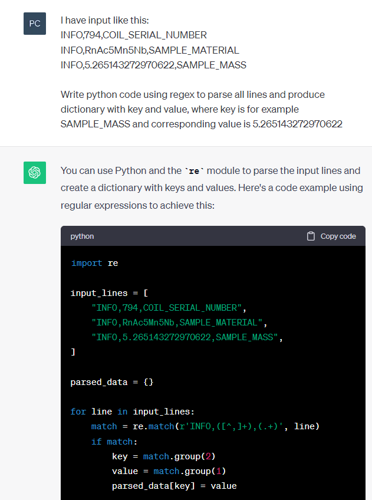
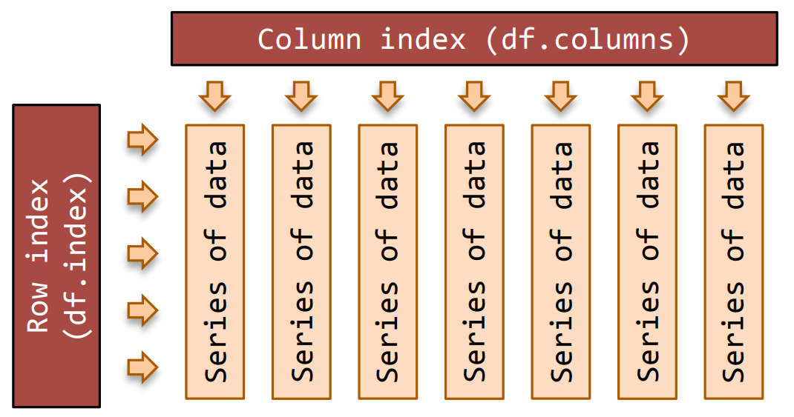
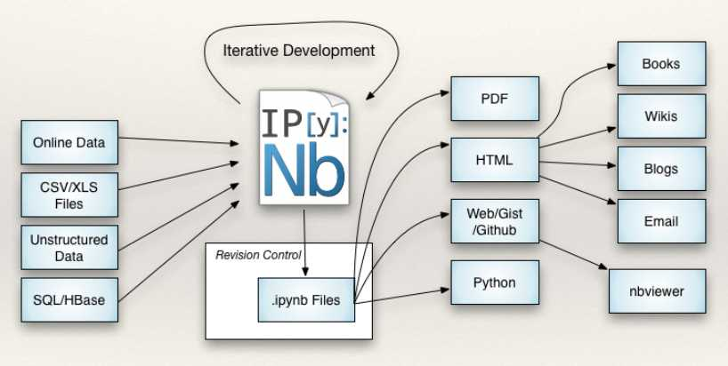

print(a)--------------------------------------------------------------------------- NameError Traceback (most recent call last) Cell In[13], line 1 ----> 1 print(a) NameError: name 'a' is not defined
In the year 2525
if man is still alive
If woman can survive,
they may find… your data
. . .
and check your nfpl242 homework
. . .
and evaluate all your measurements
Co udělají následující příkazy?
print(a)--------------------------------------------------------------------------- NameError Traceback (most recent call last) Cell In[13], line 1 ----> 1 print(a) NameError: name 'a' is not defined
a = None
print(a)Noneprint(a = 1)--------------------------------------------------------------------------- TypeError Traceback (most recent call last) Cell In[15], line 1 ----> 1 print(a = 1) TypeError: 'a' is an invalid keyword argument for print()
print(a == 1)Falseprint(a := 1)1Operátor přířazení a vrácení hodnoty, walrus, mrož:
:= ü¶≠
line = file1.readline()
while line:
print(f"Line: {line}")
line = file1.readline(). . .
while True:
line = file1.readline()
if not line:
break
print(f"Line: {line}"). . .
while line := file1.readline():
print(f"Line: {line}"). . .
for line in file1:
print(f"Line: {line}")from random import choice
name = "Erwin"
cat_alive = choice(["žije", "nežije"])
print("Tohle je %s, jeho kočka %s" % (name, cat_alive))Tohle je Erwin, jeho kočka nežijefrom random import choice
name = "Erwin"
cat_alive = choice(["žije", "nežije"])
print("Kočka %s, chudák %s" % (name, cat_alive))
print("Kočka {1}, chudák {0}".format(name, cat_alive))Kočka Erwin, chudák žije
Kočka žije, chudák Erwinfrom random import choice
name = "Erwin"
print(f"{name}ova kočka {choice(['žije', 'nežije'])}")Erwinova kočka nežijename = "Erwin"
print(f"{name = }")name = 'Erwin'from random import choice
print(f"Házím {choice(["pana", "orel"])}")Házím pana## Python 3.12
f"{
f"{
f"{
f"{
f"{
f"To se\nhodí!"
}"
}"
}" ## navíc můžu komentovat
}"
}"Teorie: NTIN071 Automaty a gramatiky
Praxe: NSWI177 Úvod do Linuxu
Fyzik: to bude něco na parsování…

pd.read_csv() - mocná funkcedf.plot() - matplotlib, ale i jíné (plotly)
py -m venv .venv
env\Scripts\activate.bat
source env/bin/activate
pip freeze > requirements.txtconda create --prefix env python
conda activate .\env
conda env export > environment.ymlinstall.packages("renv")
renv::init()
renv::snapshot()%timeit, %matplotlib, %run%%timeit!files = !dir /b /a-d #windows
files = !ls #linux
print(files)
web = "mff.cuni.cz"
!ping -c 1 $web["'ls' is not recognized as an internal or external command,", 'operable program or batch file.']
Access denied. Option -c requires administrative privileges.%timeit range(5000)158 ns ± 14.9 ns per loop (mean ± std. dev. of 7 runs, 10,000,000 loops each)jupyter qtconsole
jupyter notebook

.ipynb je binární (obsahuje i výsledky)
# %%formát dokumentace a zpracování textu, spojuje text s kódem (nejen v R)
image: registry.gitlab.com/quarto-forge/docker/python
pages:
script:
- quarto render --execute --to html --output-dir public
artifacts:
paths:
- publicPro zadané m existuje takový obecný m-úhelník, který je n-úhelníku opsaný a jehož plocha je nejmenší možná.
shapes.py